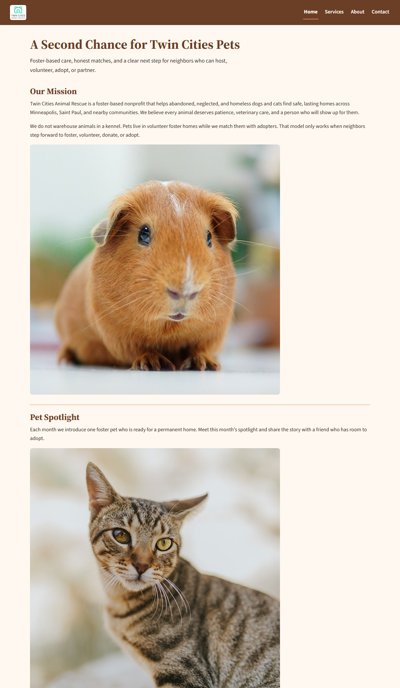

STUDENT EXEMPLAR
Name: Kyla Barton
Course: Introduction to Web Development
Date: September 21, 2026
Selected Client: Twin Cities Animal Rescue
Paste your public GitHub repository URL here:
https://github.com/bartonkyla/refactored-telegram
Respond to each prompt in 3–5 sentences. Use specific examples from your website.
Twin Cities Animal Rescue is a nonprofit that fosters and adopts animals, so the site has to feel trustworthy, warm, and approachable. I used cream for the background with brown headings and navigation, so the site feels homey and welcoming.The serif headings and sans-serif body text are easy to read, and the photos of pets in foster homes make visitors feel a tangible next step to foster, volunteer, adopt, or partner. I used the same four-page structure from Touchstone Task 2, and used one external stylesheet so Home, Services, About, and Contact look uniform. The brown header and footer repeat the rescue name and the same Home / Services / About / Contact list on every page, which makes the path to the interest form obvious. Cream page backgrounds and charcoal body text keep the mission, impact numbers, and program details easy to read. Peach is used only as an accent—on the current-page underline, card borders, and focus outline, so it stands out without overtaking the design.
I used the four main colors in css/style.css: cream
#FFF8F0, brown #6B3E26, peach
#D88C5A, and charcoal #2F2A26. Cream is the
page and card background; it feels warm but grabs your attention,
which matches the vibe of afoster-based rescue.Charcoal is the body text
color, so paragraphs on cream stay high contrast and readable on a phone
or a desktop. Brown is used for the header, footer, headings, links, and
the “Send interest form” button, with cream type on those brown surfaces
so navigation and the call to action remain clear. Peach marks emphasis,
and is the left border on "How You Want to Help" and impact cards,the underline
under the current navigation links, and the outline on form fields.
I used two fonts, with system fallbacks if the files do not load. For example,Source Serif 4 for the site name, h1, h2, h3, and form legends, and Source Sans 3 for body copy, navigation, lists, fields, and buttons. The serif headings feel familiar, which fits a community nonprofit. The sans-serif body stays clear at a small size. Hierarchy comes from the font size and weight.The Home h1 “A Second Chance for Twin Cities Pets” is the largest brown serif line, h2titles such as “How You Can Help” and “Interest Form” are smaller, "About" values use h3 titles inside each card, and body text sits at about 1.65 line-height so visitors can skim sections easily.
The CSS is mobile-first and uses Flexbox for the header, navigation,
help cards, values, program sections, form, and footer. On a narrow
screen those pieces stack in one column so a visitor can scroll from the
rescue name to the Contact link without sideways overflow. Images and
the welcome video use max-width: 100%, and the Home
picture element loads the smaller feature photo below
700px. One media query at min-width: 48rem (768px) changes
the layout for larger screens. For example, the four "How You Can
Help" items (Foster, Volunteer, Adopt, Partner) are full-width stacked
cards on a phone; at 768px and wider the same list becomes a two-by-two
Flexbox row, the header switches from a stacked column to a horizontal
one, and the two Contact fieldsets sit side by side.
The hardest part was styling the Contact interest form without breaking the Touchstone task 2 HTML. It already had a label for every control, two fieldsets with legends, the required fields, and the 000-000-0000 telephone pattern so it was not easily replaced. Instead I kept the existing structure and styled the elements, like making the labels sit above their fields in a Flexbox column, making legends stay visible in Source Serif 4, and fieldsets using a peach border so “Your contact information” and “How you want to help” still read as one group. On wider screens the fieldsets sit in a row, but the submit button stays on its own full-width row so it is not tucked beside the notes box.
Check each item when complete.
css/style.css).Insert a screenshot of your website that demonstrates one design decision described above.

Caption: Home page on a desktop width. The brown header includes the Twin Cities Animal Rescue logo beside the site name, cream navigation sits in one row, peach underlines the current Home link, and official course photos appear in Mission and Pet Spotlight. The How You Can Help items sit as side-by-side Flexbox cards. This screenshot supports the Color Palette of cream/brown/peach contrast, plus the 768px layout change from stacked cards to a multi column bar.
Review your work before you submit.